Activity: Rectangular patterns
This activity demonstrates the patterning of features. You will work with a rectangular pattern of holes.
In this activity you will:
Create the pattern.
Change the pattern's dimensions.
Change the pattern's parameters.
Suppress occurrences within the pattern.
Modify the original feature (a hole) to observe the change in the pattern.
Add a feature to the pattern.
Click here to download the activity file.
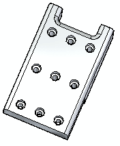
If you are using Internet Explorer and a video is not displaying in your training guide, click the Tools tab (or gear icon)→Compatibility View settings, and then clear the selection of Display intranet sites in Compatibility View.
Open patterns.par.
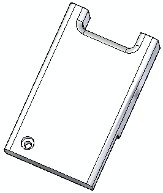
Select the hole feature.
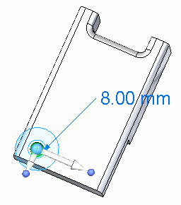
On the Home tab→Pattern group, choose the Rectangular command.
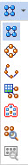
Position the cursor over the face shown. The pattern profile plane appears and you can dynamically drag to define the size. Click in the approximate position shown.
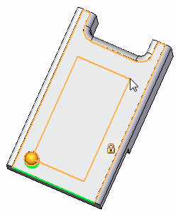
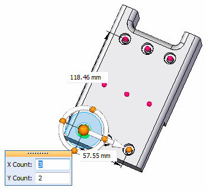
On the command bar, press the Accept button or right-click. The rectangular pattern is placed with an X count of 3 and a Y count of 2.
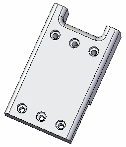
Change the Y count to 3. Select the pattern feature in PathFinder or in the part window.
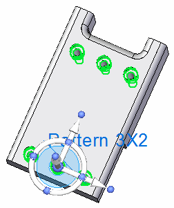
Click on the pattern handle (Pattern 3X2) and in the Y count field, type 3. Press Tab. Right-click to accept.
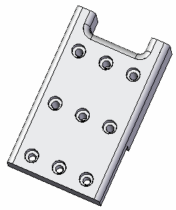
You can change the dimensional size of the pattern in several ways.
In PathFinder, select the Pattern feature just created.
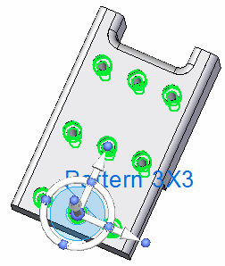
Select the pattern Edit Definition handle.
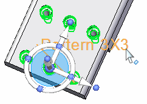
The Pattern command bar is displayed, as well as all of the defining dimensions.
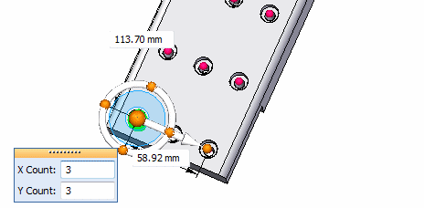
Change the pattern width (X direction) to 60 mm and the length (Y direction) to 115 mm. Do not click accept.
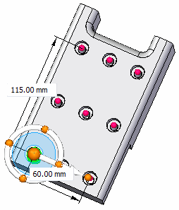
On the command bar, change the Fit style to Fixed.
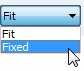
Change the occurrence separation dimension (1) to 25 mm (2).
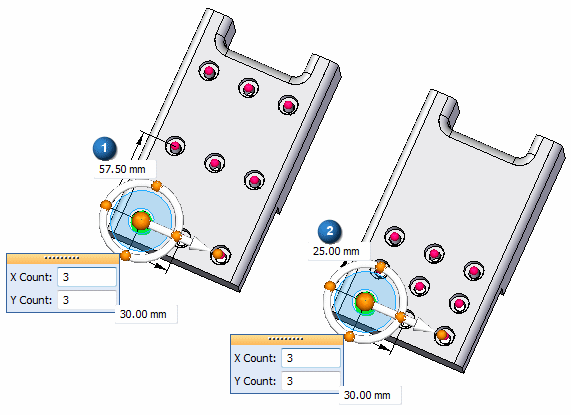
The X and Y count remains the same (3 x 3). While in the fixed mode, the X spacing is set at 30 mm and the Y spacing is set at 25 mm.
Drag the pattern handle (3) to change the size of the pattern rectangle. As the rectangle changes size, the X and Y counts automatically change to fill in the rectangular pattern area.
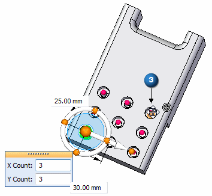
Drag to the approximate location (4) and notice that the X and Y changes to 2 and 4.
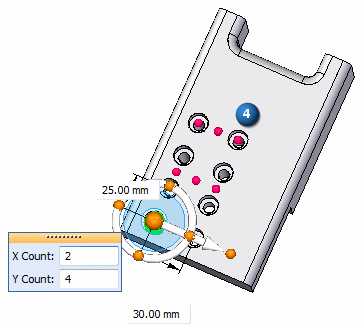
Drag to the approximate location (5) and notice that the X and Y changes to 3 and 5. On the command bar, click Accept.
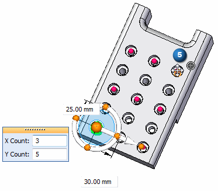
Left-click in the part window to end the pattern edit.
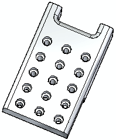
Select the pattern feature and click the edit handle. Select the Suppress Instance option on the Pattern command bar.
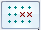
Select the middle 3 holes.
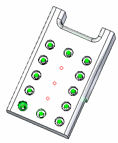
Select Accept on the Suppress command bar. Select Accept on the Pattern command bar to finish. Click in the part window to end the pattern edit.
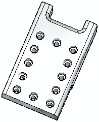
Make a change to the original feature and observe how the change propagates through the pattern.
Select the original hole. Drag the steering wheel away from the hole for clarity.
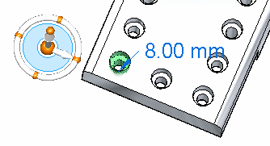
Select the Edit Definition handle to access the hole's parameters.
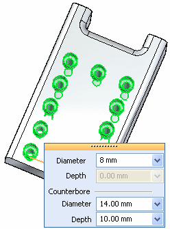
Change the diameter to 5 mm and the counter bore diameter to 8 mm.
Press Escape to complete the hole edit.
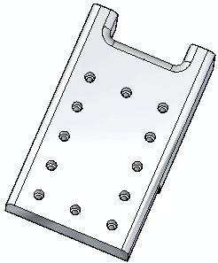
Construct 12 mm and 9 mm diameter circles centered on the original parent hole. Extrude the region formed by these circles a distance of 8 mm to form a boss.
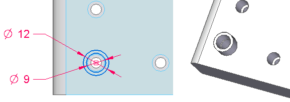
Select the pattern feature. Select its handle to access the Pattern command bar. Choose the Add to Pattern option .
Select the boss and accept it.
Click the instance marker (1) and then click Accept.
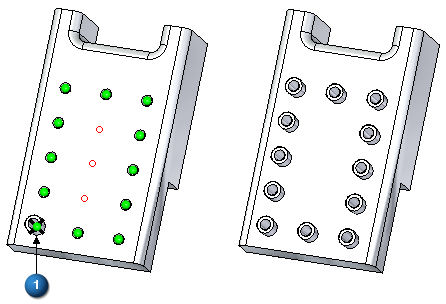
Save and close the file.
In this activity you learned how to create and edit a rectangular pattern of features. With practice, you should be able to create any desired rectangular pattern.
Click the Close button in the upper-right corner of this activity window.